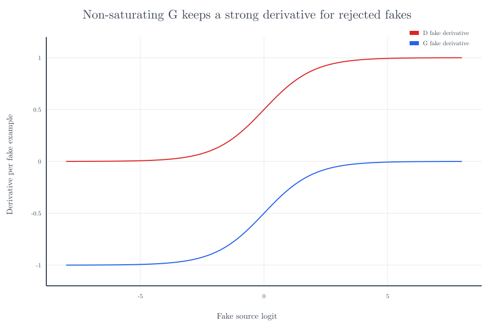
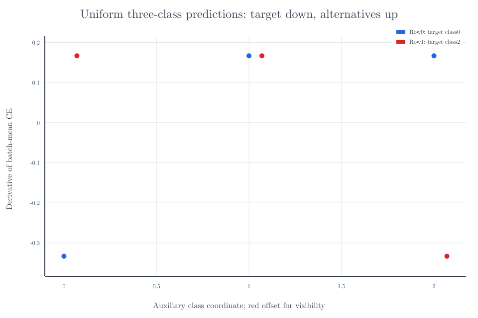
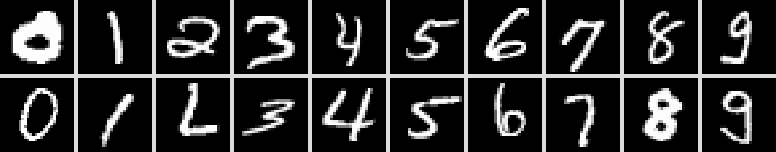
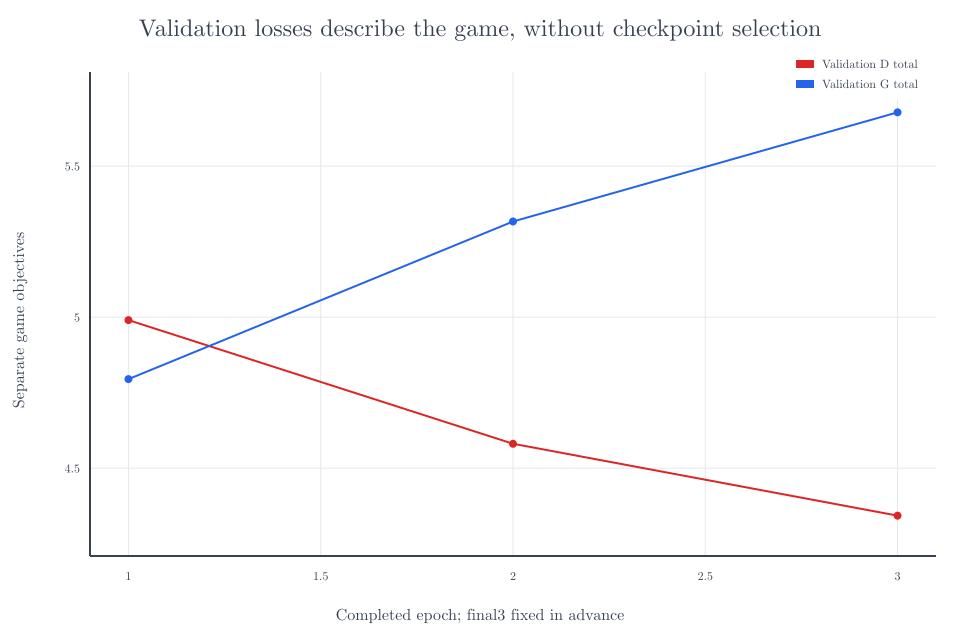
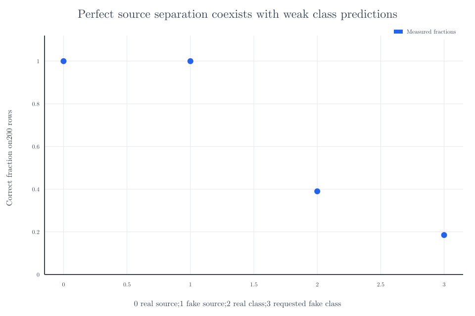
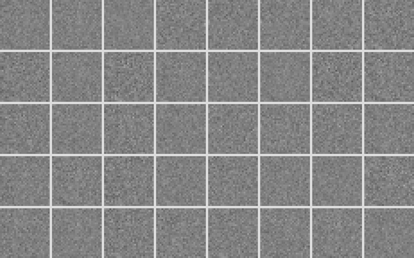
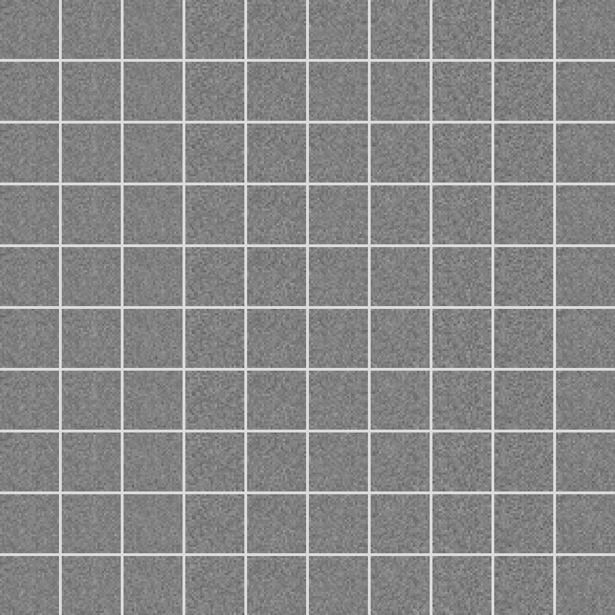
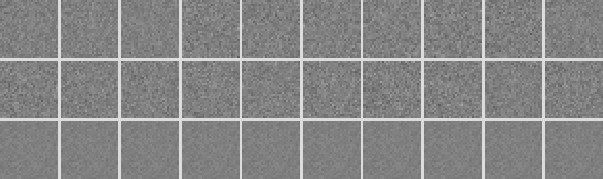

Auxiliary-Classifier GAN: Conditions, Targets and a Weak Generator
Abstract
A compact MNIST generator concatenates 16 Gaussian coordinates and a requested digit class; an image-only discriminator predicts real/fake source and ten auxiliary classes. Two native parameter stores and independent Adam states perform 96 D-then-G steps each, with G recomputed through the updated D. All 1,000 fitting images appear once per epoch; the final third epoch is fixed in advance. Held-out source accuracies reach 100% for both real and fake, while real auxiliary accuracy is 39% and requested-class accuracy on generated images is 18.5%. The generator remains mostly grey: mean intensity .4994 and coarse pixel MMD² .11795, compared with .000136 for a repeated fitting-mean image. These game diagnostics do not establish image quality. Checkpoints, isolated source/class generator gradients, same-noise class controls and all original outputs remain reproducible in the complete editable program.
A class chooses what G attempts; D still receives only an image
The requested class is concatenated with noise at G's input. D has one shared representation and two heads: a raw real/fake logit and ten class logits. It receives no label, target or noise vector. During fitting, real digit labels supply supervised targets and also choose the generated examples' requested classes. Both real and generated class losses train D; only the generated class loss accompanies G's non-saturating source objective.
This is a compact dense teaching variant of [Odena, Olah and Shlens's auxiliary-classifier GAN](https://arxiv.org/abs/1610.09585), not a reproduction of its convolutional high-resolution benchmark. The source generator objective uses the [non-saturating GAN variant](https://arxiv.org/abs/1406.2661).
#include <dm/dm.hpp>
int main() {
std::filesystem::create_directories("build");
dm::graphics::Diagram d(49, 1250);
dm::graphics::DiagramNodeStyle s;
s.width = 7.5;
s.height = 3.;
s.font_size = 18;
d.node("condition", {-12, 5}, "Explicit z16 + class ID\nOne-hot10 concatenated", s)
.node("g", {-2, 5}, "G: tanh32 → sigmoid784\nFour leaves /26736 values", s)
.node("fake", {8, 5}, "Generated image784\nNo label passed to D", s)
.node("dfake", {18, 5}, "Shared D, generated input\nSource1 + class10 heads", s)
.node("real", {8, -4}, "Real image784\nNo label passed to D", s)
.node("dreal", {18, -4}, "Same D, real input\nSix leaves /25483 values", s)
.edge("condition", "g")
.edge("g", "fake")
.edge("fake", "dfake")
.edge("real", "dreal")
.text(
{3, -9},
"Class IDs also supply CE targets outside D. D update → fresh forward → G update.",
19)
.save_svg("build/acgan_method.svg");
}
Stable source losses and a hand-checkable gradient
For a raw source logit s, positive means real and σ(s)=1/(1+exp(-s)). Write sp(s)=log(1+exp(s)), evaluated by the native stable softplus. Separate pool means give
At zero logits, the two D terms total 2log2 and G gives log2. For one fake example, ∂L_G/∂s_f=σ(s_f)-1: at s_f=-80 it remains approximately-1, so confident rejection does not saturate the generator's source gradient. For real examples, ∂sp(-s_r)/∂s_r=-σ(-s_r). Keep sp(-s_r) intact: replacing it numerically by sp(s_r)-s_r can cancel a small positive-logit derivative in Float32. The native objective accepts unequal positive real/fake pool sizes, averaging each pool separately; this experiment uses matching sizes because the class targets are paired.
#include <dm/dm.hpp>
int main() {
namespace n = dm::nn;
std::vector<double> x, real, fake, g;
for (int k = -80; k <= 80; ++k) {
x.push_back(k / 10.);
const auto r = n::full({1, 1}, k / 10., n::DType::Float64),
f = n::full({1, 1}, k / 10., n::DType::Float64);
const auto o = n::models::LogisticGanObjectives(r, f);
real.push_back(n::softplus(-r).item());
fake.push_back(n::softplus(f).item());
g.push_back(o.generator.item());
}
auto p = dm::graphics::RPlot::create();
p.lines(x, real, "D real / G fake-as-real", {37, 99, 235}, 2.)
.lines(x, fake, "D fake", {220, 38, 38}, 2.)
.x_label("Raw source logit")
.y_label("Per-example loss")
.title("Opposing source targets use stable softplus")
.save_svg("build/acgan_source_losses.svg");
const auto zero = n::models::LogisticGanObjectives(n::zeros({1, 1}), n::zeros({1, 1}));
std::print("At zero: D={:.9f}, G={:.9f}.\n", zero.discriminator.item(), zero.generator.item());
}At zero: D=1.386294365, G=0.693147182.

#include <dm/dm.hpp>
int main() {
namespace n = dm::nn;
std::vector<double> x, d, g;
for (int k = -80; k <= 80; ++k) {
x.push_back(k / 10.);
auto r = n::zeros({1, 1}, n::DType::Float64),
f = n::full({1, 1}, k / 10., n::DType::Float64).requires_grad_();
auto o = n::models::LogisticGanObjectives(r, f);
d.push_back(n::grad(o.discriminator, {f})[0].item());
g.push_back(n::grad(o.generator, {f})[0].item());
}
auto p = dm::graphics::RPlot::create();
p.lines(x, d, "D fake derivative", {220, 38, 38}, 2.)
.lines(x, g, "G fake derivative", {37, 99, 235}, 2.)
.x_label("Fake source logit")
.y_label("Derivative per fake example")
.title("Non-saturating G keeps a strong derivative for rejected fakes")
.save_svg("build/acgan_source_gradients.svg");
auto r = n::full({1, 1}, 80.).requires_grad_(), f = n::full({1, 1}, -80.).requires_grad_();
auto o = n::models::LogisticGanObjectives(r, f);
std::print(
"Float32: dD/dreal at80={:.9e}; dG/dfake at-80={:.9f}.\n",
n::grad(o.discriminator, {r})[0].item(),
n::grad(o.generator, {f})[0].item());
}Float32: dD/dreal at80=-1.804851329e-35; dG/dfake at-80=-1.000000000.

Auxiliary class loss supplies a second generator path
With class logits a and one-hot target y, CE(a,y)=-Σ_c y_c log softmax(a)_c. Its logit derivative is softmax(a)-y, divided by batch size after averaging. For two rows and three uniform logits, CE=log3; a target coordinate has derivative -1/3 and each other coordinate +1/6. The full objectives use unit auxiliary weights:
Both generator terms backpropagate through D and G. Choosing only G's parameters for its optimizer freezes D's writes, while retaining D's mathematical input derivative. The first fitting minibatch saves the isolated source and class G derivatives and checks their sum against the full G derivative. Labels are discrete and have no gradient path.
#include <dm/dm.hpp>
int main() {
namespace n = dm::nn;
auto logits = n::zeros({2, 3}, n::DType::Float64).requires_grad_();
auto labels = n::tensor({0., 2.}, {2}, n::DType::Int32);
auto loss = n::models::AuxiliaryClassLoss(logits, labels);
auto gradient = n::grad(loss, {logits})[0];
std::print("CE={:.9f}; mean-loss logit derivatives: {}.\n", loss.item(), gradient.values_str());
auto p = dm::graphics::RPlot::create();
p.points(
{0, 1, 2},
n::select(gradient, 0, 0).to_vector<double>(),
"Row0: target class0",
{37, 99, 235},
5.)
.points(
{.07, 1.07, 2.07},
n::select(gradient, 0, 1).to_vector<double>(),
"Row1: target class2",
{220, 38, 38},
5.)
.x_label("Auxiliary class coordinate; red offset for visibility")
.y_label("Derivative of batch-mean CE")
.title("Uniform three-class predictions: target down, alternatives up")
.save_svg("build/acgan_toy_class.svg");
}CE=1.098612289; mean-loss logit derivatives: [[-0.333333, 0.166667, 0.166667], [0.166667, 0.166667, -0.333333]].

Data provenance and architecture are fixed before fitting
The native mnist-assets preparation produces the original balanced saliency pools: 1,000 fitting images, 200 validation images and 200 official-test images, with100/20/20 examples per digit class. Source IDs and original pixels are unique across pools. Pixels enter as Int32 bytes and are normalized by Float32 byte/255 arithmetic. Validation diagnostics never select an epoch: final epoch 3 is fixed in advance. An initial test forward is archived before fitting solely as an initial control. The fixed schedule is already chosen; test outcomes never select updates, epochs, hyperparameters or checkpoint weights. The final held-out diagnostics are computed from the restored epoch3 checkpoint.
| Component | Geometry and creation order | Leaves | Scalars |
|---|---|---|---|
| G | concat(z16,onehot10) → tanh32 → sigmoid784; hidden then output W,b | 4 | 26736 |
| D | image784 → tanh32 → class10 and source1; hidden, CLASS, SOURCE W,b | 6 | 25483 |
| Total | Separate initialization seeds5209 and5219 | 10 | 52219 |
Class-head creation precedes source-head creation in D's initializer stream, even though its source head is discussed first. All ten leaves and their names are preserved. The reusable components also support finite Float32/64 matrices, strides and positive custom widths; the original experiment remains Float32 with the dimensions above.
#include <dm/dm.hpp>
int main() {
namespace n = dm::nn;
const auto root = std::filesystem::path(dm::datasets::data_home());
dm::datasets::prepare_example_data("mnist-assets", root);
const auto pools = n::models::LoadSaliency(root / "saliency");
std::filesystem::create_directories("build");
std::print("| pool | images | each class | source boundary |\n|---|---:|---:|---|\n");
for (int k = 0; k < 3; ++k)
std::print(
"| {} | {} | {} | {} |\n",
k == 0 ? "fit"
: k == 1 ? "validation"
: "test",
pools[k].images.size(0),
pools[k].images.size(0) / 10,
k == 2 ? "60000..69999" : "0..59999");
std::vector<std::int64_t> displayed;
for (int k=0;k<2;++k) for (int c=0;c<10;++c) {
const auto row=100*c+k;
if(pools[0].labels.at({row})!=c)throw std::runtime_error("Expected fixed class-major fitting archive");
displayed.push_back(row);
}
n::save_image_grid(n::take_rows(pools[0].images,displayed),"build/acgan_fitting_examples.png",10,0,1,4,220/255.,3);
}| pool | images | each class | source boundary |
|---|---|---|---|
| fit | 1000 | 100 | 0..59999 |
| validation | 200 | 20 | 0..59999 |
| test | 200 | 20 | 60000..69999 |

Complete experiment: two stores, two Adam states and visible alternating writes
Both Adam instances use learning rate .0002,β1=.5,β2=.999 andε=1e-8. BatchOrder(1000,32,4847) yields31 full minibatches and one8-row tail per epoch. Gaussian training banks use seeds4862,4863,4864; validation/test banks use4823/4831. Each batch updates D once and then recomputes G's loss through the newly updated D. There are 96 writes to each store and 192 optimizer updates, without a scheduler, early stopping or validation selection. No quadratic MMD is evaluated inside a training forward; evaluation adds the existing native IMQ diagnostic explicitly under NoGradGuard.
The following is the complete editable program, including artifact assembly and controls. It uses no legacy example helper, external training runner or hidden update loop. Archives retain original group prefixes0/ and1/. Restoring all ten leaves into fresh stores must match exactly; inference checks that all 52219 parameters stay unchanged.
#include <dm/dm.hpp>
namespace nn = dm::nn;
namespace m = nn::models;
using Arrays = std::map<std::string, nn::Tensor>;
using nn::Tensor;
namespace {
void Require(bool condition, const std::string& message) {
if (!condition)
throw std::runtime_error(message);
}
void Near(double actual, double expected, double tolerance, const std::string& message) {
Require(std::abs(actual - expected) <= tolerance, message);
}
void SaveArrays(const std::string& path, const Arrays& arrays) {
nn::save_npz(path, nn::NamedTensors(arrays.begin(), arrays.end()));
}
bool Equal(const Tensor& a, const Tensor& b) {
return nn::equal_bits(a, b);
}
bool Equal(const Arrays& a, const Arrays& b) {
if (a.size() != b.size())
return false;
for (const auto& [key, value] : a)
if (!b.count(key) || !Equal(value, b.at(key)))
return false;
return true;
}
Tensor Gaussian(std::int64_t n, std::int64_t width, std::uint64_t seed) {
return nn::cast(m::GaussianNoise({n, width}, 1, seed).reshape({n, width}), nn::DType::Float32);
}
double MaxAbsDiff(const Tensor& a, const Tensor& b) {
return nn::max(nn::abs(nn::cast(a, nn::DType::Float64) - nn::cast(b, nn::DType::Float64))).item();
}
void Mosaic(const std::filesystem::path& path, const Tensor& images, std::int64_t columns) {
nn::save_image_grid(
images.reshape({images.size(0), 28, 28, 1}), path.string(), columns, 0, 1, 4, 220 / 255., 3);
}
Arrays Fields(const m::AuxiliaryClassifierGanOutput& o) {
return {
{"fake", o.fake},
{"real_logit", o.real_logit},
{"fake_logit", o.fake_logit},
{"real_probability", o.real_probability},
{"fake_probability", o.fake_probability},
{"discriminator_loss", o.discriminator_loss},
{"generator_loss", o.generator_loss},
{"real_class_logits", o.real_class_logits},
{"fake_class_logits", o.fake_class_logits},
{"real_class_probability", o.real_class_probability},
{"fake_class_probability", o.fake_class_probability},
{"real_class_loss", o.real_class_loss},
{"fake_class_loss", o.fake_class_loss},
{"source_discriminator_loss", o.source_discriminator_loss},
{"source_generator_loss", o.source_generator_loss}};
}
double Value(const Arrays& a, const std::string& key) {
return a.at(key).item();
}
/// Logistic GAN algebra at extreme logits: finite losses and gradients, and
/// a strong non-saturating G gradient when D is confident a sample is fake.
void Algebra(const std::filesystem::path& root) {
Tensor real = nn::tensor({-80, -2, 2, 80}, {4, 1}), fake = nn::tensor({80, 2, -2, -80}, {4, 1});
real.requires_grad_();
fake.requires_grad_();
const auto loss = m::LogisticGanObjectives(real, fake);
const auto dg = nn::grad(loss.discriminator, {real, fake});
const auto gg = nn::grad(loss.generator, {fake});
Arrays out{
{"real", real.detach()},
{"fake", fake.detach()},
{"discriminator_loss", loss.discriminator.detach()},
{"generator_loss", loss.generator.detach()},
{"d_real_gradient", dg[0]},
{"d_fake_gradient", dg[1]},
{"g_fake_gradient", gg[0]}};
for (const auto& [key, value] : out)
for (double x : value.to_vector<double>())
Require(std::isfinite(x), "finite " + key);
Require(gg[0].at({3, 0}) < -.24, "non-saturating G has strong gradient when D confident fake");
std::cout << "logistic algebra: D loss=" << loss.discriminator.item()
<< ", G loss=" << loss.generator.item() << ", dG/dfake=" << gg[0].values_str() << '\n';
SaveArrays((root / "logistic_algebra.npz").string(), out);
}
} // namespace
int main() {
const std::filesystem::path root = "build/acgan";
const int epochs = 3;
const auto data = std::filesystem::path(dm::datasets::data_home()) / "saliency";
dm::datasets::prepare_example_data("mnist-assets", data.parent_path());
const auto pools = m::LoadSaliency(data);
std::filesystem::create_directories(root);
Algebra(root);
const Tensor validation_z = Gaussian(200, 16, 4823), test_z = Gaussian(200, 16, 4831);
nn::ParameterStore g(5209), d(5219);
std::vector<nn::ParameterStore*> stores{&g, &d};
{
nn::NoGradGuard guard;
m::AuxiliaryClassifierGan(
g, d, nn::zeros({2, 784}), nn::zeros({2, 16}), nn::zeros({2}, nn::DType::Int32));
}
auto snapshot = [&]() {
Arrays out;
for (int k = 0; k < 2; ++k)
for (const auto& name : stores[k]->names())
out.emplace(std::to_string(k) + "/" + name, stores[k]->at(name).detach().clone());
return out;
};
auto forward = [&](const Tensor& x, const Tensor& z, const Tensor& labels) {
return Fields(m::AuxiliaryClassifierGan(g, d, x.reshape({x.size(0), 784}), z, labels));
};
auto evaluate = [&](const Tensor& x, const Tensor& z, const Tensor& labels) {
nn::NoGradGuard guard;
auto out = forward(x, z, labels);
out.emplace(
"pixel_mmd", m::ImqMmd(m::GanCoarsePixels(x), m::GanCoarsePixels(out.at("fake"))).value);
return out;
};
auto named = [&](const std::vector<Tensor>& derivatives) {
Arrays out;
auto names = g.names();
for (std::size_t k = 0; k < names.size(); ++k)
out.emplace("0/" + names[k], derivatives[k]);
return out;
};
nn::OptimizerConfig config;
config.kind = nn::OptimizerKind::Adam;
config.beta1 = .5;
config.beta2 = .999;
config.epsilon = 1e-8;
nn::Optimizer go(g, .0002, config), disc(d, .0002, config);
std::vector<nn::Optimizer*> optimizers{&go, &disc};
Require(
g.count() == 26736 && d.count() == 25483 && g.size() + d.size() == 10,
"G 26736 + D 25483 = 52219 parameters, 10 tensors");
SaveArrays((root / "initial_arrays.npz").string(), snapshot());
SaveArrays(
(root / "initial_outputs.npz").string(), evaluate(pools[2].images, test_z, pools[2].labels));
nn::BatchOrder order(1000, 32, 4847);
std::ofstream history(root / "history.tsv"), batches(root / "batches.tsv");
history.precision(17);
history << "epoch\tvalidation_discriminator_loss\tvalidation_generator_loss\tvalidation_coarse_"
"pixel_mmd\n";
batches << "epoch\tstep\trow\tsource_id\n";
const auto source = nn::cast(pools[0].source, nn::DType::Int64).to_vector<std::int64_t>();
int steps = 0;
const auto started = std::chrono::steady_clock::now();
for (int epoch = 1; epoch <= epochs; ++epoch) {
const Tensor noise = Gaussian(1000, 16, 4861 + epoch);
order.begin_epoch();
int seen = 0;
for (;;) {
const auto rows = order.next();
if (rows.empty())
break;
const Tensor x = nn::take_rows(pools[0].images, rows), z = nn::take_rows(noise, rows),
condition = nn::take_rows(pools[0].labels, rows);
if (!steps) {
SaveArrays((root / "first_forward.npz").string(), evaluate(x, z, condition));
const auto g_source =
named(nn::grad(forward(x, z, condition).at("source_generator_loss"), g.parameters()));
const auto g_aux =
named(nn::grad(forward(x, z, condition).at("fake_class_loss"), g.parameters()));
for (const auto& [key, value] :
named(nn::grad(forward(x, z, condition).at("generator_loss"), g.parameters()))) {
const auto full = value.to_vector<float>(), a = g_source.at(key).to_vector<float>(),
b = g_aux.at(key).to_vector<float>();
for (std::size_t i = 0; i < full.size(); ++i)
Near(
full[i],
double(a[i]) + b[i],
2e-6,
"G gradient = source PLUS auxiliary class components");
}
SaveArrays((root / "first_g_source_gradients.npz").string(), g_source);
SaveArrays((root / "first_g_aux_gradients.npz").string(), g_aux);
}
for (int group : {1, 0}) {
const auto before = steps ? Arrays{} : snapshot();
// D first, then a FRESH forward through the UPDATED D for G.
const auto out = forward(x, z, condition);
const auto loss = out.at(group == 1 ? "discriminator_loss" : "generator_loss");
const auto gradients = nn::grad(loss, stores[group]->parameters());
optimizers[group]->step(gradients);
if (!steps) {
bool changed = false;
for (const auto& [key, value] : before) {
if (key.rfind(std::to_string(group) + "/", 0) == 0)
changed |= !nn::equal_bits(value, snapshot().at(key));
else
Require(nn::equal_bits(value, snapshot().at(key)), "unselected group unchanged");
}
Require(changed, "selected group changed");
}
}
for (auto row : rows)
batches << epoch << '\t' << steps << '\t' << row << '\t' << source[row] << '\n';
++steps;
seen += int(rows.size());
}
Require(seen == 1000, "all fitting MNIST examples ONCE per epoch");
const auto v = evaluate(pools[1].images, validation_z, pools[1].labels);
history << epoch << '\t' << Value(v, "discriminator_loss") << '\t' << Value(v, "generator_loss")
<< '\t' << Value(v, "pixel_mmd") << '\n';
std::cout << "epoch " << epoch << ": diagnostic D loss=" << Value(v, "discriminator_loss")
<< ", G loss=" << Value(v, "generator_loss")
<< ", coarse MMD=" << Value(v, "pixel_mmd") << std::endl;
}
const double seconds =
std::chrono::duration<double>(std::chrono::steady_clock::now() - started).count();
const auto checkpoint = (root / "final.npz").string();
Require(
steps == 96 && go.iterations() == 96 && disc.iterations() == 96, "192 alternating updates");
SaveArrays(checkpoint, snapshot());
nn::ParameterStore restored_g(1), restored_d(2);
{
nn::NoGradGuard guard;
m::AuxiliaryClassifierGan(
restored_g,
restored_d,
nn::zeros({2, 784}),
nn::zeros({2, 16}),
nn::zeros({2}, nn::DType::Int32));
}
for (const auto& [name, value] : nn::load_npz(checkpoint))
(name[0] == '0' ? restored_g : restored_d).set(name.substr(2), value);
auto restored_arrays = [&]() {
Arrays out;
for (int k = 0; k < 2; ++k) {
auto& store = k == 0 ? restored_g : restored_d;
for (const auto& name : store.names())
out.emplace(std::to_string(k) + "/" + name, store.at(name).detach().clone());
}
return out;
};
auto sample = [&](const Tensor& z, const Tensor& labels) {
nn::NoGradGuard guard;
return m::ConditionalGanGenerate(restored_g, z, labels);
};
auto restored_evaluate = [&](const Tensor& x, const Tensor& z, const Tensor& labels) {
nn::NoGradGuard guard;
auto out = Fields(
m::AuxiliaryClassifierGan(restored_g, restored_d, x.reshape({x.size(0), 784}), z, labels));
out.emplace(
"pixel_mmd", m::ImqMmd(m::GanCoarsePixels(x), m::GanCoarsePixels(out.at("fake"))).value);
return out;
};
Require(Equal(snapshot(), restored_arrays()), "all final G/D weights restore BIT EXACT");
const auto before = restored_arrays();
const auto output = restored_evaluate(pools[2].images, test_z, pools[2].labels);
const Tensor repeat = sample(test_z, pools[2].labels);
Require(
Equal(output.at("fake"), repeat), "noise+class generation BIT EXACT matches GAN evaluation");
const double parity = MaxAbsDiff(
sample(nn::take_rows(test_z, {0}), nn::take_rows(pools[2].labels, {0})),
nn::take_rows(repeat, {0}));
Require(parity < 2e-6, "G single/batch parity");
const Tensor changed_z = Gaussian(200, 16, 4877),
changed_images = sample(changed_z, pools[2].labels);
Require(!Equal(changed_images, repeat), "different noise affects G images");
const Tensor zero_images = sample(nn::zeros({200, 16}), pools[2].labels);
Require(!Equal(zero_images, repeat), "G not constant zero-latent mapping");
SaveArrays(
(root / "controls.npz").string(),
{{"changed_z", changed_z},
{"changed_images", changed_images},
{"zero_z", nn::zeros({200, 16})},
{"zero_images", zero_images}});
// Same ten test noise vectors for every class (row = class), and D's real
// logits under shifted labels: BOTH networks must depend on the class.
std::vector<std::int64_t> grid_rows;
std::vector<std::int32_t> grid_classes;
for (int c = 0; c < 10; ++c)
for (int k = 0; k < 10; ++k)
grid_rows.push_back(k), grid_classes.push_back(c);
const Tensor grid_z = nn::take_rows(test_z, grid_rows),
grid_labels = nn::from_vector(grid_classes, {100});
const Tensor grid = sample(grid_z, grid_labels);
const double g_condition_effect = MaxAbsDiff(
nn::slice_axis(grid, 0, 10, 100), nn::tile(nn::slice_axis(grid, 0, 0, 10), {9, 1}));
auto wrong_classes = pools[2].labels.contiguous().to_vector<std::int32_t>();
for (auto& c : wrong_classes)
c = (c + 1) % 10;
Tensor wrong_labels = nn::from_vector(wrong_classes, {200});
const auto wrong = restored_evaluate(pools[2].images, test_z, wrong_labels);
const double d_condition_effect = MaxAbsDiff(output.at("real_logit"), wrong.at("real_logit"));
Require(
g_condition_effect > 1e-5 && d_condition_effect == 0,
"G conditional but D real IMAGE ONLY independent of G condition");
Require(
Equal(output.at("real_class_probability"), wrong.at("real_class_probability")),
"changing conditions/CE targets leaves real class predictions BIT EXACT");
const auto image_only = [&]() {
nn::NoGradGuard guard;
const auto out = m::AuxiliaryGanDiscriminate(restored_d, pools[2].images.reshape({200, 784}));
return Arrays{{"source_logit", out.source}, {"class_probability", out.class_probability}};
}();
Require(
Equal(image_only.at("source_logit"), output.at("real_logit")) &&
Equal(image_only.at("class_probability"), output.at("real_class_probability")),
"D classifier requires IMAGE ONLY, no class/noise/targets");
int invalid_rejected = 0;
for (int invalid : {-1, 10}) {
auto bad = wrong_classes;
bad[0] = invalid;
try {
sample(test_z, nn::from_vector(bad, {200}));
} catch (const std::exception&) {
++invalid_rejected;
}
}
try {
sample(test_z, nn::take_rows(pools[2].labels, {0}));
} catch (const std::exception&) {
++invalid_rejected;
}
Require(
invalid_rejected == 3,
"negative/out of range/mismatched class labels rejected before OneHot");
SaveArrays(
(root / "conditioning_controls.npz").string(),
{{"grid_z", grid_z},
{"grid_labels", grid_labels},
{"grid_images", grid},
{"wrong_real_logits", wrong.at("real_logit")},
{"wrong_real_class_probability", wrong.at("real_class_probability")},
{"image_only_real_class_probability", image_only.at("class_probability")}});
Mosaic(root / "same_z_class_grid.png", grid, 10);
Require(Equal(before, restored_arrays()), "all G/D diagnostic generation immutable");
SaveArrays((root / "outputs.npz").string(), output);
const Tensor fit_mean =
nn::tile(nn::mean(pools[0].images.reshape({1000, 784}), {0}, true), {200, 1});
const double mean_mmd =
m::ImqMmd(m::GanCoarsePixels(pools[2].images), m::GanCoarsePixels(fit_mean)).value.item();
double real_accuracy = 0, fake_accuracy = 0;
const auto real_score = output.at("real_logit").to_vector<float>(),
fake_score = output.at("fake_logit").to_vector<float>();
for (int b = 0; b < 200; ++b)
real_accuracy += real_score[b] >= 0, fake_accuracy += fake_score[b] < 0;
const auto labels = nn::cast(pools[2].labels, nn::DType::Int64).to_vector<std::int64_t>();
const auto real_best =
nn::argmax(output.at("real_class_probability"), 1).to_vector<std::int64_t>();
const auto fake_best =
nn::argmax(output.at("fake_class_probability"), 1).to_vector<std::int64_t>();
double real_aux_accuracy = 0, fake_aux_accuracy = 0;
for (int b = 0; b < 200; ++b)
real_aux_accuracy += real_best[b] == labels[b], fake_aux_accuracy += fake_best[b] == labels[b];
const auto pixel_mean = nn::mean(nn::cast(repeat, nn::DType::Float64), {0}, true);
const double mean_pixel = nn::mean(pixel_mean).item(),
pixel_variance =
nn::mean(nn::square(nn::cast(repeat, nn::DType::Float64) - pixel_mean)).item();
Mosaic(root / "generated.png", nn::slice_axis(repeat, 0, 0, 40), 8);
Mosaic(root / "fit_mean.png", nn::slice_axis(fit_mean, 0, 0, 8), 8);
std::ofstream meta(root / "metrics.json");
meta.precision(17);
meta << "{\"generator_parameters\":26736,\"discriminator_parameters\":25483,\"epochs\":" << epochs
<< ",\"steps_per_group\":" << steps << ",\"optimizer_updates\":" << 2 * steps
<< ",\"selected_epoch_fixed_final\":" << epochs
<< ",\"test_discriminator_loss\":" << Value(output, "discriminator_loss")
<< ",\"test_generator_loss\":" << Value(output, "generator_loss")
<< ",\"test_coarse_pixel_mmd\":" << Value(output, "pixel_mmd")
<< ",\"fit_mean_coarse_pixel_mmd\":" << mean_mmd
<< ",\"test_discriminator_real_accuracy\":" << real_accuracy / 200
<< ",\"test_discriminator_fake_accuracy\":" << fake_accuracy / 200
<< ",\"generated_mean_pixel\":" << mean_pixel
<< ",\"generated_mean_per_pixel_variance\":" << pixel_variance
<< ",\"generator_class_probability_max_effect\":" << g_condition_effect
<< ",\"discriminator_real_source_condition_max_effect\":" << d_condition_effect
<< ",\"invalid_condition_controls_rejected\":" << invalid_rejected
<< ",\"test_real_aux_class_accuracy\":" << real_aux_accuracy / 200
<< ",\"test_fake_requested_aux_class_accuracy\":" << fake_aux_accuracy / 200
<< ",\"single_batch_max_error\":" << parity << ",\"training_seconds\":" << seconds << "}\n";
Require(bool(meta) && bool(history) && bool(batches), "complete GAN artifacts");
history.close();
batches.close();
meta.close();
std::cout << "fixed FINAL epoch " << epochs
<< ", test D/G=" << Value(output, "discriminator_loss") << "/"
<< Value(output, "generator_loss") << ", coarse MMD=" << Value(output, "pixel_mmd")
<< ", mean baseline=" << mean_mmd << ", D real/fake accuracy=" << real_accuracy / 200
<< "/" << fake_accuracy / 200
<< ", aux class accuracy real/fake=" << real_aux_accuracy / 200 << "/"
<< fake_aux_accuracy / 200 << ", mean pixel=" << mean_pixel
<< ", pixel variance=" << pixel_variance
<< "; D then G/restore/noise+classOnly/immutable PASS (training " << seconds
<< " s)\nArtifacts: " << root.string()
<< "\nAll auxiliary_classifier_gan checks passed.\n";
std::ifstream input(root / "history.tsv");
std::string header;
std::getline(input, header);
std::vector<double> epoch_axis, d_path, g_path;
double e, dl, gl, mm;
while (input >> e >> dl >> gl >> mm) {
epoch_axis.push_back(e);
d_path.push_back(dl);
g_path.push_back(gl);
}
auto plot = dm::graphics::RPlot::create();
plot.lines(epoch_axis, d_path, "Validation D total", {220, 38, 38}, 2.)
.points(epoch_axis, d_path, "", {220, 38, 38}, 4.)
.lines(epoch_axis, g_path, "Validation G total", {37, 99, 235}, 2.)
.points(epoch_axis, g_path, "", {37, 99, 235}, 4.)
.x_label("Completed epoch; final3 fixed in advance")
.y_label("Separate game objectives")
.title("Validation losses describe the game, without checkpoint selection")
.save_svg("build/acgan_learning.svg");
}logistic algebra: D loss=41.1269, G loss=20.5635, dG/dfake=[[-4.51213e-36], [-0.0298007], [-0.220199], [-0.25]] epoch 1: diagnostic D loss=4.99027, G loss=4.79502, coarse MMD=0.120637 epoch 2: diagnostic D loss=4.58099, G loss=5.31675, coarse MMD=0.120366 epoch 3: diagnostic D loss=4.34301, G loss=5.67805, coarse MMD=0.119984 fixed FINAL epoch 3, test D/G=4.28507/5.68368, coarse MMD=0.117949, mean baseline=0.000135779, D real/fake accuracy=1/1, aux class accuracy real/fake=0.39/0.185, mean pixel=0.499391, pixel variance=0.00142644; D then G/restore/noise+classOnly/immutable PASS (training 0.251578 s) Artifacts: build/acgan All auxiliary_classifier_gan checks passed.

Held-out diagnostics expose the failed short run
A source sign threshold of0 yields 100% real and 100% fake accuracy: D easily separates these two pools. That success does not mean G succeeded. Real auxiliary accuracy is 39%, and fake requested-class accuracy 18.5%, on 200 held-out rows each. Class balance makes 10% a useful uniform-guess reference, but these are one-run descriptive fractions, not a comparison with a trained external classifier or an estimate of sample quality. Mean generated intensity .4994 accompanies low mean per-pixel variance .001426. No held-out metric changes the fixed checkpoint or hyperparameters.
#include <dm/dm.hpp>
int main() {
namespace n = dm::nn;
std::map<std::string, n::Tensor> a;
for (const auto& [key, value] : n::load_npz("build/acgan/outputs.npz"))
a.emplace(key, value);
const auto pools =
n::models::LoadSaliency(std::filesystem::path(dm::datasets::data_home()) / "saliency");
auto labels = pools[2].labels.to_vector<int>(),
rb = n::argmax(a.at("real_class_probability"), 1).to_vector<int>(),
fb = n::argmax(a.at("fake_class_probability"), 1).to_vector<int>();
double real = 0, fake = 0, rc = 0, fc = 0;
for (int k = 0; k < 200; ++k) {
real += a.at("real_logit").at({k, 0}) >= 0;
fake += a.at("fake_logit").at({k, 0}) < 0;
rc += rb[k] == labels[k];
fc += fb[k] == labels[k];
}
std::print(
"| held-out fraction | value |\n|---|---:|\n| real source correct | {:.3f} |\n| fake source "
"correct | {:.3f} |\n| real auxiliary correct | {:.3f} |\n| fake requested auxiliary correct "
"| {:.3f} |\n",
real / 200,
fake / 200,
rc / 200,
fc / 200);
auto p = dm::graphics::RPlot::create();
p.points(
{0, 1, 2, 3},
{real / 200, fake / 200, rc / 200, fc / 200},
"Measured fractions",
{37, 99, 235},
6.)
.x_label("0 real source;1 fake source;2 real class;3 requested fake class")
.y_label("Correct fraction on200 rows")
.y_limits(0, 1.12)
.title("Perfect source separation coexists with weak class predictions")
.save_svg("build/acgan_accuracies.svg");
}| held-out fraction | value |
|---|---|
| real source correct | 1.000 |
| fake source correct | 1.000 |
| real auxiliary correct | 0.390 |
| fake requested auxiliary correct | 0.185 |

#include <dm/dm.hpp>
int main() {
namespace n = dm::nn;
std::map<std::string, n::Tensor> a;
for (const auto& [key, value] : n::load_npz("build/acgan/outputs.npz"))
a.emplace(key, value);
n::save_image_grid(
n::slice_axis(a.at("fake"), 0, 0, 40).reshape({40, 28, 28, 1}),
"build/acgan_generated.png",
8,
0,
1,
4,
220 / 255.,
3);
}
Same noise across classes distinguishes conditioning from classification
The grid below repeats the same first ten test noise vectors for every class. Rows 0..9 request classes 0..9; columns hold noise fixed. The maximum change against class0 is .06537. This establishes that G responds to its condition, not that its images depict the requested digits. Separately, shifting the real CE targets by one modulo10 leaves D's real source logits and auxiliary predictions bit exact: D is image-only. Negative, out-of-range and wrong-length label controls are all rejected before one-hot allocation.
#include <dm/dm.hpp>
int main() {
namespace n = dm::nn;
std::map<std::string, n::Tensor> a;
for (const auto& [key, value] : n::load_npz("build/acgan/conditioning_controls.npz"))
a.emplace(key, value);
n::save_image_grid(
a.at("grid_images").reshape({100, 28, 28, 1}),
"build/acgan_class_grid.png",
10,
0,
1,
4,
220 / 255.,
3);
std::print("Rows request classes0..9; columns repeat the same ten z vectors.\n");
}Rows request classes0..9; columns repeat the same ten z vectors.

#include <dm/dm.hpp>
int main() {
namespace n = dm::nn;
std::map<std::string, n::Tensor> a, c;
for (const auto& [k, v] : n::load_npz("build/acgan/outputs.npz"))
a.emplace(k, v);
for (const auto& [k, v] : n::load_npz("build/acgan/controls.npz"))
c.emplace(k, v);
const auto first = n::slice_axis(a.at("fake"), 0, 0, 10),
changed = n::slice_axis(c.at("changed_images"), 0, 0, 10),
zero = n::slice_axis(c.at("zero_images"), 0, 0, 10);
n::save_image_grid(
n::concat({first, changed, zero}, 0).reshape({30, 28, 28, 1}),
"build/acgan_noise_controls.png",
10,
0,
1,
4,
220 / 255.,
3);
}
A coarse MMD diagnostic has a strong blind spot
Each 28x28 image becomes sixteen 7x7 block means divided by 4. Existing native IMQ kernels average c/(c+||u-v||²) over c=1,4,16. The unbiased two-sample MMD² omits within-pool diagonals and retains every cross-pool pair; both pools need at least two samples. There is no new kernel implementation in this conversion. The 16-coordinate descriptor throws away within-block structure, and its MMD² is not an image-quality score. An unbiased finite-sample estimate may be negative; it is not a normalized accuracy.
On the200 test rows, generated-image MMD² is.11794877 while the repeated fitting-mean image gives.0001357794. The latter discards all diversity, so a low value cannot establish useful generation. The baseline is fitted from the 1,000 fitting images only and repeated 200 times; it never uses test pixels to estimate its mean.
#include <dm/dm.hpp>
int main() {
namespace n = dm::nn;
const auto pools =
n::models::LoadSaliency(std::filesystem::path(dm::datasets::data_home()) / "saliency");
std::map<std::string, n::Tensor> a;
for (const auto& [k, v] : n::load_npz("build/acgan/outputs.npz"))
a.emplace(k, v);
const auto mean = n::tile(n::mean(pools[0].images.reshape({1000, 784}), {0}, true), {200, 1});
const auto test = n::models::GanCoarsePixels(pools[2].images);
const double generated =
n::models::ImqMmd(test, n::models::GanCoarsePixels(a.at("fake"))).value.item(),
baseline = n::models::ImqMmd(test, n::models::GanCoarsePixels(mean)).value.item();
std::print(
"Coarse MMD² generated={:.12f}; repeated fitting mean={:.12f}.\n", generated, baseline);
auto p = dm::graphics::RPlot::create();
p.points({0, 1}, {generated, baseline}, "Coarse IMQ MMD squared", {37, 99, 235}, 6.)
.x_label("0 generator;1 repeated fitting mean")
.y_label("Unbiased MMD squared,200 versus200")
.title("A low coarse discrepancy does not certify image quality")
.save_svg("build/acgan_mmd.svg");
n::save_image_grid(
n::slice_axis(mean, 0, 0, 8).reshape({8, 28, 28, 1}),
"build/acgan_fit_mean.png",
8,
0,
1,
4,
220 / 255.,
3);
}Coarse MMD² generated=0.117948770523; repeated fitting mean=0.000135779381.

#include <dm/dm.hpp>
int main() {
namespace n = dm::nn;
const auto pools =
n::models::LoadSaliency(std::filesystem::path(dm::datasets::data_home()) / "saliency");
auto mean = n::tile(n::mean(pools[0].images.reshape({1000, 784}), {0}, true), {8, 1});
n::save_image_grid(
mean.reshape({8, 28, 28, 1}), "build/acgan_fit_mean.png", 8, 0, 1, 4, 220 / 255., 3);
}
Reproduction evidence and limits
The original program's ten archives contain 919949 values. Native delegation reproduces all dtypes, shapes and value bytes, both TSV files, all three original PNGs and non-timing JSON values exactly. The report repeats those comparisons; training duration is remeasured. The independent NumPy checker reads prepared raw data and artifacts without datamunge: it checks 749714 forward values, 53472 isolated source/class G derivatives, 24 scalar finite differences, seeded noise and all 3000 minibatch source rows. This is separate numerical validation, not a second fitted benchmark or proof of GAN convergence.
The compiled API examples and native/Python/R component checks cover initialization order, label validation before leaf creation, stable extreme logits, first/higher continuous paths, strides, owned result lifetimes and selected-store Adam writes. The report's complete experiment remains the C++ loop above; host-language component coverage does not claim completed independent Python/R experiment ports.
This single small run has no seed sweep, external quality metric or confidence interval. Fixed noise enables comparisons across checkpoints and controls, but remains one finite sample. D's source accuracy, auxiliary class accuracy and the coarse MMD answer distinct questions. The visible grey samples, low requested-class accuracy and stronger repeated-mean coarse baseline remain part of the result.
References: [Goodfellow et al. 2014](https://arxiv.org/abs/1406.2661) introduces the GAN and non-saturating source alternative; [Odena, Olah and Shlens 2017](https://arxiv.org/abs/1610.09585) introduces auxiliary-class conditioning. Architecture, seeds, grouping, schedule and artifacts here follow the repository's original compact teaching program.